2135A10 automatic transmission manual control lever and support - r + r and overhaul
- Path
- Procedures > 21 GEARBOX > 2135 AUTOMATIC TRANSMISSION EXTERNAL CONTROLS > 2135A automatic transmission manual controls > 2135A10 automatic transmission manual control lever and support - r + r and overhaul
- Kind
- repair procedure (removal / refitting; the operation number is the code)
- Applies to
- engines: 2.5 V6; all production periods
- Interactive page
- https://sloeber94.github.io/elrnDB-a156/en/#/3238004
Applies to: engines: 2.5 V6; all production periods; only with equipment: Q-System
 Removing
Removing
 Refitting
RefittingRemove the tunnel lining (refer to op. 7040L20 tunnel trim - r r ).
5010B46 central air duct to rear seat - arrange
1. Remove the gear lever protective boot.
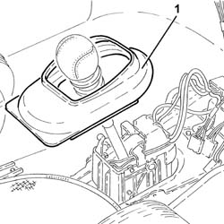
Applies to: engines: 2.5 V6; all production periods; only with equipment: Q-System
1. Disconnect the electrical connection from the handbrake "on" warning light switch.
 | Name | Connector |
|---|---|---|
1 | Handbrake switch |
2. Undo adjustment nut (2a) and place the handbrake in a vertical position (2b).
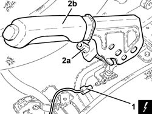
Applies to: engines: 2.5 V6; all production periods; only with equipment: Q-System
Position the vehicle on the ramp.
5530B52 Battery DRIP TRAY/SUPPORT - R.R.
1. Undo nut (1a) and disconnect the gear control cable (1b) from the lever.
2. Remove the gear control cable clip on the mounting bracket.
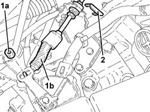
Applies to: engines: 2.5 V6; all production periods; only with equipment: Q-System
7055B54 under-engine guard - r r Guard beneath engine].
Disconnect the lambda probe electrical connection for the left cylinder head.
| Name | Connector |
|---|---|---|
- | Lambda sensor |
1. Undo the bolt on the exhaust pipe front rigid mounting.
2. Undo the nuts (2a) and remove the exhaust pipe from the left and right exhaust manifold (2b) complete with left cylinder head Lambda probe (2c).
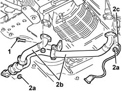
Applies to: engines: 2.5 V6; all production periods; only with equipment: Q-System
1. Undo the bolts and disconnect the catalytic converter from the intermediate exhaust silencer.
2. Remove the catalytic converter together with the rear sealing ring after releasing it from the flexible mounting ring.
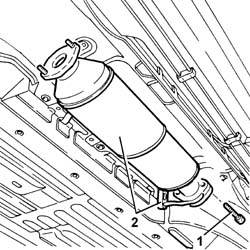
Applies to: engines: 2.5 V6; all production periods; only with equipment: Q-System
1. Undo the bolts (1a) and remove heat shield (1b).
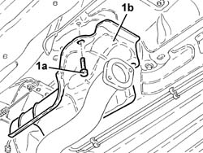
Applies to: engines: 2.5 V6; all production periods; only with equipment: Q-System
1. Remove the retainer (1a) and disconnect the handbrake cables (1b).
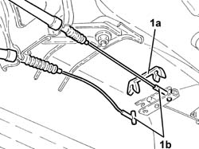
Applies to: engines: 2.5 V6; all production periods; only with equipment: Q-System
1. Position a hydraulic jack fitted with a suitable bracket under the automatic transmission manual control lever and mounting.
2. Undo nuts (2a) and bolts (2b) securing the automatic transmission manual control lever and mounting to the bodyshell.
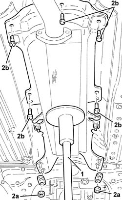
Applies to: engines: 2.5 V6; all production periods; only with equipment: Q-System
1. Slowly lower the hydraulic jack and remove the automatic transmission manual control lever and mounting.
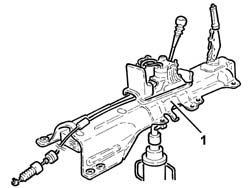
Applies to: engines: 2.5 V6; all production periods; only with equipment: Q-System
1. Remove the retainer and disconnect the gear control cable from the lever.
2. Press the clips and withdraw the gear control cable from the lever.
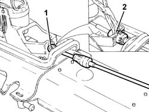
Applies to: engines: 2.5 V6; all production periods; only with equipment: Q-System
1. Undo the nuts (1a) and remove the automatic transmission manual control lever assembly (1b).
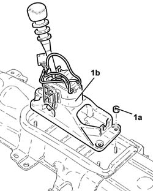
Applies to: engines: 2.5 V6; all production periods; only with equipment: Q-System
1. Undo the bolt (1a) securing the gear control lever lower sleeve (1b).
2. Withdraw the pin (2a) securing the upper sleeve (2b) of the gera control lever.
3. Press the clips and remove the gear lever knob.
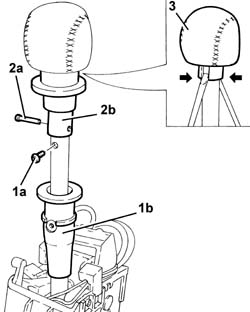
Applies to: engines: 2.5 V6; all production periods; only with equipment: Q-System
Refitting
RemovingPlace the gear lever knob back in its housing.
Place the gear control lever upper sleeve back in its housing and secure with the pin.
Place the gear control lever lower sleeve back in its housing and secure with the bolt.
Place the automatic transmission manual gear lever assembly back in its housing and secure it using the nuts.
Place the gear control cable to the lever back in its housing.
Connect the gear control cable to the lever and secure using the retainer.
Refit the mounting and automatic transmission manual control lever in their seating using the hydraulic jack, then secure with the bolt and nut.
Remove the hydraulic jack from beneath the mounting and lever of the automatic transmission manual control.
Connect the handbrake cables and secure them using the retainer.
Place the heat shield back in its housing and secure it using the nuts.
Place the catalytic convertor back in its housing and secure to the intermediate exhaust silencer using the bolts.
Refit in its seating the exhaust pipe from the left and right exhaust manifold complete with left cylinder head Lambda probe and fix it using the nuts.
Tighten the bolts securing the exhaust pipe front rigid mounting.
Connect the left cylinder head electrical connection for the Lambda sensor.
7055B54 under-engine guard - r r Guard beneath engine].
Secure the gear control cable to the support bracket with the retainer.
Connect the gear control cable
5530B52 Battery DRIP TRAY/SUPPORT - R.R.
Remove the vehicle from the ramp.
Connect the electrical connection to the handbrake "on" warning light switch.
Place the gear level protective boot back in its housing
5010B46 central air duct to rear seat - arrange
Fit the tunnel lining (refer to op. 7040L20 tunnel trim - r r ). 3380A04 handbrake - check travel
When refitting, carry out the following checks:
- you should be able to start the engine with the gear selector in position P or N;
- the signals on the instrument panel should correspond with the position of the gear selector lever;
- with the lever in position D the marker (a) on the bracket should correspond with the ridge (b) on the upper surface of the sensor.
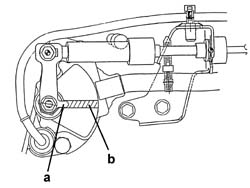